2026年广东省公务员录用考试《行测》题（网友回忆版）
言语理解与表达
逻辑填空
1. 创新从来都是九死一生，但我们必须有“亦余心之所善兮，虽九死其犹未悔”的豪情。我国广大科技工作者要有强烈的创新信心和决心，既不，也不妄自尊大，勇于攻坚克难、追求卓越、赢得胜利，积极抢占科技竞争和未来发展制高点。
填入画横线部分最恰当的一项是：
答案：C
解析：根据“既不······也不······”可知，横线处成语与“妄自尊大”语义相反，应体现出过分看轻自己之意，C项“妄自菲薄”指毫无根据地过分看轻自己，符合文意，当选。
A项“固步自封”比喻守着老一套，不求进步，反义应为“革故鼎新”等，D项“甘居人后”指愿意处于落后的地位，不求上进，反义应为“奋勇争先”等，均无法与“妄自尊大”构成反义并列，排除；B项“骄傲自满”指自高自大、满足于已有的成绩，与“妄自尊大”语义相近，无法构成反义并列，排除。
【文段出处】《习近平：在中国科学院第十九次院士大会、中国工程院第十四次院士大会上的讲话》
2. 从广袤的海洋到无垠的天空，从复杂的陆地战场到神秘的电磁空间，每一个角落都着高科技的较量。其中，数据链宛如一条无形却坚韧的纽带，将各个作战单元紧密相连，成为现代战争中的关键要素，深刻地影响甚至决定着战争的走向与胜负。
依次填入画横线处最正确的一项是：
答案：C
解析：本题可先从第二空入手，根据“关键要素”“深刻地影响甚至决定着战争的走向与胜负”可知，数据链对现代战争非常重要，是关键要素，A项“举足轻重”比喻能起到影响全局的关键作用，C项“当之无愧”指完全够条件承当某种荣誉，不用惭愧，均可以体现数据链的重要作用，保留。B项“毋庸置疑”指事实非常明显或理由非常充足，没有必要持怀疑态度，正确用法为“数据链成为现代战争中的关键要素毋庸置疑”，置于此处用法错误，排除；D项“不可偏废”指不可只顾一面而不顾另一面，要两方面兼顾，文段并未涉及兼顾两方面，与文意不符，排除。
第一空，横线处搭配“较量”，且根据“从广袤的海洋到无垠的天空，从复杂的陆地战场到神秘的电磁空间”可知，横线处应体现每个角落都有高科技的较量之意，C项“充斥”指充满，到处都是，符合文意，当选。A项“弥漫”指布满，到处充斥着，常搭配气味、烟雾等，与“较量”搭配不当，排除。
【文段出处】学习时报《数据链：现代战争的“神经中枢”》
3. 星间链路技术，让北斗系统实现了“一星通，星星通”。从一片空白、奋力追赶，再到和世界领先的全球导航系统，一代代科研人员自立自强、自主创新、拼搏超越，蹚出了一条的卫星导航探索之路。
依次填入画横线处最恰当的一项是：
答案：D
解析：第一空，根据“从一片空白、奋力追赶，再到和世界领先的全球导航系统”可知，横线处成语应与“一片空白、奋力追赶”表意相反，体现出和世界领先的全球导航系统水平相当之意。A项“不分伯仲”指分不出第一第二，水平相当，D项“并驾齐驱”指并排套着的几匹马一齐快跑，比喻彼此的力量或才能不分高下或地位相当，均符合文意，保留。B项“不期而遇”指没有约定而意外地相遇，C项“并行不悖”指同时进行而互相不违背，互不冲突，均与文意不符，排除。
第二空，根据“一代代科研人员自立自强、自主创新、拼搏超越”可知，横线处成语应体现出走出了一条属于自己的路之意。D项“独具一格”指拥有与众不同的独特风格，符合文意，当选。A项“别无二致”意为完全一样，没有区别，与自主创新的文意相悖，排除。
【文段出处】人民网 人民日报 《北斗：远在天外，近在身边》
4. 树立正确的政绩观，既要以“立说立行”的锐气抢抓机遇，又要以“久久为功”的韧劲夯实发展根基。“立说立行”强调机遇的紧迫感，“久久为功”则注重的战略定力，二者看似矛盾，实则统一于高质量发展的实践逻辑中。
依次填入画横线部分最恰当的一项是：
答案：B
解析：第一空，搭配“机遇”，且根据“以‘立说立行’的锐气抢抓机遇”以及“紧迫感”可知，横线处应体现机遇容易消逝、需及时把握之意。B项“稍纵即逝”指稍微一放松就溜过去了，形容时间、机会等极易失去，D项“时不我待”形容时间不等人，指要抓紧时间，均强调要抓紧时间，及时把握，符合文意，保留。A项“白驹过隙”指白马在细小的缝隙前一闪而过，形容时间过得飞快，侧重时间流逝快，与“机遇”搭配不当，排除；C项“千载难逢”形容机会难得，侧重强调“难得”，无法体现“紧迫感”，与文意不符，排除。
第二空，根据“‘久久为功’的韧劲”和“战略定力”可知，横线处需体现长期坚持、不松懈之意。B项“持之以恒”指长久地坚持下去，强调坚持，与文意相符，当选。D项“安之若素”指（遇到不顺利情况或反常现象）像平常一样对待，毫不在意，无法体现坚持、不松懈之意，排除。
【文段出处】人民日报《“立说立行”与“久久为功”（思想纵横）》
5. 全球发展倡议提出以来，理念内涵不断，落实机制不断健全，推进路径更加，务实合作逐步落地，推动国际社会聚焦发展问题，培育面向未来的高质量发展动能，为全球南方国家发展鸿沟、共建美好世界提供中国方案。
依次填入画横线部分最恰当的一项是：
答案：B
解析：第一空，搭配“理念内涵”，且根据“理念内涵不断······落实机制不断健全”相同句式表并列可知，横线处应该与“健全”语义接近，B项“丰富”指充裕的，很多的，C项“扩展”指向外伸展，均符合文意，保留。A项“升华”指通过某种方式将一种低级、粗俗、庸俗的事物或观念提升至高尚、纯洁、美好的境界，D项“深化”指向更深的阶段发展，二者均侧重纵向的发展，与“健全”语义无关，无法构成并列关系，排除。
第二空，搭配“推进路径”，B项“清晰”指清楚、明确，放入文段表达推进全球发展的方法、路径更加清楚，符合文意，保留。C项“宽阔”指宽广、广阔，与“推进路径”搭配不当，排除。
第三空，代入验证，搭配“发展鸿沟”，且根据“培育面向未来的高质量发展动能”“共建美好世界”可知，横线处应体现使全球南方国家之间的发展差距缩小甚至消失之意，B项“弥合”指使愈合，与“发展鸿沟”搭配恰当，且为热词搭配，符合文意，当选。
【文段出处】新华网《在现代化道路上一起加速奔跑——全球发展倡议唱响共同发展的时代强音》
言语理解与表达
片段阅读
6. 当前，中国经济已转向高质量发展阶段，旧的生产函数组合方式已经难以持续，不可能像高速增长阶段那样主要依靠要素投入驱动经济增长，必须转向更多依靠科技创新和全要素生产率的提高。面对新一轮科技革命和产业变革深入发展，中国既要摆脱传统增长方式下粗放扩张、低效发展的生产力发展路径，又要拓展先进生产力发展空间。以科技创新为核心，培育和发展新质生产力，才能为高质量发展开辟新路径、注入新动力。
这段文字主要讲了（ ）。
答案：B
解析：文段开篇指出中国经济已转向高质量发展阶段，经济增长需要依靠科技创新和全要素生产率的提高，接着指出既要摆脱传统增长方式下粗放扩张、低效发展的生产力发展路径，又要拓展先进生产力发展空间，尾句通过必要条件提出对策，强调培育和发展新质生产力才能为高质量发展开辟新路径、注入新动力。故文段重点强调高质量发展需要培育和发展新质生产力，对应B项。
A项，缺少文段主题词“新质生产力”“高质量发展”，偏离文段核心，排除；
C项，缺少文段主题词“新质生产力”“高质量发展”，偏离文段核心，且“都会带来生产力质的飞跃”表述过于绝对，排除；
D项，缺少文段主题词“高质量发展”，偏离文段核心，文段重点强调通过培育和发展新质生产力实现高质量发展，选项并未提及“高质量发展”这一最终目标，排除。
【文段出处】人民日报《新质生产力，如何在实践中成长（高质量发展故事汇·第2期）》
言语理解与表达
语句表达
7. 服务群众，用“家常话”将政策解释清是只是第一步，更需要读懂群众“家常话”背后的喜怒哀乐。“家常话”里，有群众的关切点，也有推动政策落地的发力点，在这里，“社会救助”不是抽象名词，而是张大爷的医药费有着落；“产业振兴”不只是报告里的概念，而是李大姐柑橘园里的累累硕果。服务群众才会更加精准、更有实效。
填入上文画横线处的语句，最恰当的一句是（ ）。
答案：A
解析：横线位于文段结尾，需对前文内容进行总结。文段开头指出服务群众时，用“家常话”解释政策只是第一步，更要读懂群众“家常话”背后的喜怒哀乐，接着强调“家常话”里包含群众的关切点和政策落地的发力点，并通过具体事例加以说明。因此，横线处所填语句应体现找准群众需求点，对应A项。
B项，“将群众的需求装心里”侧重把需求装心里记着，文段强调的不是仅仅“把需求装心里记着”，而是强调“找准群众需求点”切实行动，话题不一致，排除；
C项，“多下笨功夫、多啃硬骨头”强调要攻坚克难，文段未提及相关内容，无法衔接，排除；
D项，“常进老乡门、常聊家里事”侧重的是跟群众多沟通，而文段强调“找准群众需求点”，无法衔接，排除。
【文段出处】人民日报《在火热实践中增本领、长才干（大家谈·选择西部 扎根西部 建功西部⑦）》
言语理解与表达
片段阅读
8. 改革不可能一蹴而就，特别是许多重大改革任务需要一年接着一年推进。党员干部特别是领导干部对于前任领导推进的改革任务，只要是贯彻党中央精神的、切合实践要求的、符合人民群众愿望的，就要坚持一张蓝图绘到底，一茬接着一茬干。对于改革任务的落实，不能“新官不理旧账”，这是确保干一件成一件的内在要求。新时代，许许多多改革任务的落实，都是一茬接着一茬干的结果。
以下干事创业精神，最贴合上文要求的是（ ）。
答案：C
解析：文段开篇介绍改革不可能一蹴而就，许多重大改革任务需要持续推进。之后指出党员干部对于前任领导符合党中央精神、实践要求和群众愿望的改革任务，要坚持 “一张蓝图绘到底，一茬接着一茬干”，不能 “新官不理旧账”。尾句再次指出新时代许多改革任务的落实都是一茬接着一茬干的结果。故文段主要强调领导干部对于改革任务要放眼长远，不追求个人短期政绩，要注重持续接力，确保改革成功。C项“功成不必在我” 体现了不把成功完全归于自己，不追求短期个人政绩，“功成必定有我” 则表明在改革接力过程中，自己也是推动改革成功的一份子，与文段中强调的持续推进改革、一茬接着一茬干的精神相符，当选。
A项，“时不我待、只争朝夕”强调时间紧迫，要抓住当下、争分夺秒推进工作，与文段侧重改革的持续推进和接力的语境不符，排除；
B项，“抓铁有痕、踏石留印”比喻做事踏实有力、求真务实，留下实实在在的成效，没有涉及到改革任务的持续接力以及对长远改革成果的追求，不符合文意，排除；
D项，“踏平坎坷成大道，斗罢艰险又出发”强调直面困难、不畏艰险，攻克阻碍后继续奋勇前进与应对挑战的勇气，与文段所强调的精神不符，排除。
【文段出处】人民日报《确保干一件成一件（思想纵横）》
9. 近年来，多地鼓励市民通过“随手拍”反映市政设施损坏、不文明行为等城市治理问题。作为庞大复杂的有机体，城市运转涉及经济、文化、民生等多个领域和部门，规划、政策、制度等即便再完善细密也难以穷尽城市治理的每一个细节、每一处角落。城市理想蓝图与现实场景之间的微小“空白”，特别需要广大市民主动作为、共同“填补”。看似简单的市民“随手拍”，反映出市民变被动接受公共服务为主动参与城市治理的积极意识。
上述文字意在说明（ ）。
答案：C
解析：文段先引出“随手拍”参与城市治理的现象，接着指出问题“城市运转复杂，制度规划难以覆盖所有治理细节”，随后通过程度词“特别”强调对策，即需要广大市民主动作为。文段末尾再次强调“随手拍”反映出市民主动参与城市治理。故文段重点强调对策“需要市民主动作为”，且文段主题词为“城市治理”，对应C项。
A项“城市文明建设人人有责”、D项“城市理想蓝图需要全民共绘”均缺少文段核心话题“主动作为”，文段并非仅强调全民参与，而是强调全民的主动参与，排除；
B项，“城市运转体系庞大且复杂”为问题阐述，文段重点强调对策，非重点，排除。
【文段出处】新华社新媒体《“随手拍”折射治理新增量》
10. 从“村BA”到“村超”，从乡村博物馆到美术馆、音乐会，一批乡村文体活动开展得有声有色。这些乡村公共文化服务衍生出的新业态，正在成为推动乡村全面振兴的重要动力。乡村公共文化服务提升和乡村文化产业发展要充分考虑乡土特征，聚焦乡村资源优势和文化特色，提炼乡村的文化主题和品牌定位，打造集村史馆、乡村书屋等功能于一体的复合体空间，采用多元化、艺术化和高新技术的场景营造手段，建设乡土美学生活体验中心，注重乡村本土节日的挖掘，从而推动文化创意赋能乡村可持续发展。
根据这段文字，作者最有可能认同（ ）。
答案：D
解析：文段开篇以乡村文体活动为例，引出乡村公共文化服务新业态对乡村全面振兴的推动作用。接着通过“要”指出对策，强调乡村公共文化服务提升与文化产业发展需立足乡土特征，聚焦乡村特色，提炼乡村定位，打造乡村复合体空间，建设乡土美学生活体验中心，挖掘乡村本土节日，最终赋能乡村可持续发展。故文段重在强调通过挖掘乡村本土文化资源赋能乡村可持续发展，对应D项。
A项，对应文段开头“乡村公共文化服务衍生出的新业态成为推动乡村全面振兴的重要动力”的内容，非重点，且“乡村公共文化服务”偷换概念，排除；
B项，“村字头的文体活动”对应文段开篇的例子，非重点，排除；
C项，“复合体空间”仅是具体对策中的一部分，表述片面，排除。
【文段出处】人民日报《澎湃的国潮 生动的文化自信（年终特别报道）》
11. “发展是人类社会永恒的主题”“贫穷是实现人权的最大障碍”······这些朴素而深刻的论断，构成了中国人权观的重要认知基础。正如习近平主席所强调的，对于发展中国家来说，“生存权、发展权是首要的基本人权”，要“在发展中保障和改善民生，保护和促进人权”。离开了发展，其他一切权利的实现便如同空中楼阁、无源之水。正是基于这一根本遵循，中国走出了一条将人权的普遍性原则与中国实际相结合、以发展促进和保障人权的特色道路。
以下选项中，最适合作为这段文字标题的是（ ）。
答案：A
解析：文段首句通过举例引出中国人权观的认知基础，随后引用总书记的讲话指出，对发展中国家来说，要在发展中保护和促进人权，接着从反面进行论证发展对人权的重要性。尾句通过“正是”进行强调得出结论，即中国走出一条以发展促进和保障人权的特色道路。故文段重点强调发展是保障人权的基础，中国通过发展来促进和保障人权。A项“以发展之钥，启人权之门”对应“以发展促进和保障人权”这一中国特色道路，形象概括文段主旨，当选。
B项，“全球方案”与文段“与中国实际相结合”“中国特色道路”不符，范围扩大，排除；
C项，只提到“生存和发展是基本权利”，但文段重点是中国通过发展保障人权，该选项未突出“发展促进人权”的实践路径，排除；
D项，“发展权优先”并非文段强调的重点，且“基本共识”与“中国特色道路”不符，排除。
【文段出处】新华社《以发展之钥 启人权之门》
12. 文化重在化人，但能否真正用文化引导人们坚定理想、塑造灵魂、涵养品德、砥砺人格等，要看“化”的水平。如何使以文化人“化”得合情理、“化”得受欢迎、“化”得效果好，考验着我们的文化工作水平。习近平总书记强调：“要润物细无声，运用各类文化形式，生动具体地表现社会主义核心价值观，用高质量高水平的作品形象地告诉人们什么是真善美，什么是假恶丑，什么是值得肯定和赞扬的，什么是必须反对和否定的。”
根据这段文字，作者意在强调：
答案：C
解析：文段开篇指出以文化人的效果关键在于“化”的水平，接着指出如何让以文化人合情理、受欢迎、效果好，考验着我们的文化工作水平，之后引用总书记的话给出对策，即以文化人要“润物细无声”，运用各类文化形式，以高质量作品生动表现价值观，实现潜移默化的引导，故整个文段重在强调做好以文化人的方法，对应C项。
A、B两项，均缺少“以文化人”的核心话题，偏离文段重点，排除；
D项，文段重点强调的是做好以文化人的方法，而“社会主义核心价值观”为以文化人要传递的内容，非文段重点，排除。
【文段出处】人民日报《离开人，文化建设就会失去最根本的意义（思想纵横）》
言语理解与表达
语句表达
13. 在中华文明滋养的神州大地上，。袁隆平院士一生扎根稻田，用“粒粒皆辛苦”的执着培育出杂交水稻；“时代楷模”张玉滚坚守深山小学二十余载，以“桃李不言”的奉献点亮山村孩子的未来；“大国工匠”高凤林焊接火箭发动机，用“毫厘不差”的精准诠释工匠精神；“人民楷模”王继才32年坚守开山岛，用“孤岛不孤”的信念诠释守岛人的担当······一位位先进典型、一次次精神洗礼，不断激发全社会的思想认同、情感共鸣和效仿意愿，营造出崇德向善、见贤思齐、德行天下的浓厚氛围。
据材料内容，填入横线处最合适的句子是（ ）。
答案：A
解析：横线出现在文段开头，且为首句中的分句，需结合首句及后文内容分析。文段开篇引出神州大地这一背景，后文以袁隆平院士、“时代楷模”张玉滚等先进典型为例，涉及农业、教育、工业等不同职业领域，最后强调这些榜样激发全社会的认同和效仿意愿，最终促成“崇德向善、见贤思齐、德行天下”的正向社会氛围。根据后文内容可知，这些不同行业的事例共同彰显了敬业、奉献、担当等高尚职业道德，故横线处应体现神州大地上各行业普遍存在践行良好职业道德的典型，A项“职业道德之花”与前文“神州大地”构成形象表达，“光彩绽放”呼应后文人物的光辉事迹，当选。
B项，“开创新局面、展现新气象”强调职业道德建设的阶段性突破与发展成果，但文段仅客观罗列各行业先进典型的职业操守与精神风貌，未提及“创新突破”“局面革新”等相关表述，与后文衔接不当，排除；
C项，“敬业精神代代相传”，一方面仅强调“敬业”，例子中的精神不限于“敬业”，还包括奉献、担当等，表述片面；另一方面“代代相传”强调代际传承，而后文内容未体现精神的传承脉络，仅聚焦当下典型的示范效应，与后文衔接不当，排除；
D项，“用心钻研、追求极致的工匠精神”仅对应“大国工匠”高凤林这一个例子，表述片面，排除。
【文段出处】光明日报《培厚职业道德，增强人民精神力量》
言语理解与表达
片段阅读
14. 造纸术和印刷术的发明，为文学提供了物质载体与传播媒介，催生了图书出版业，电气技术使得记录影像和声音成为可能，带动广播、电影、电视等的发展，在新一轮科技革命和产业变革加快孕育的今天，人工智能、5G、区块链等新技术得到普及应用，科技进步对文化创新的驱动作用日益显著，极大地激发文化创新创造活力，为文化繁荣发展提供了新的载体和机遇。
对上述文段内容概括最准确的是（ ）。
答案：C
解析：文段开篇指出古代造纸术和印刷术的发明催生了图书出版业。接着说明电气技术带动电影、电视等文化产业发展。最后强调如今人工智能、5G等新技术驱动文化创新，为文化繁荣提供机遇。故整个文段为沿着时间顺序展开的并列结构，围绕“科技”与“文化”展开，强调不同时期的科技进步都推动了文化领域的发展，对应C项。
A项，“融合”侧重双向互动，而文段核心是“科技推动文化”，并非双向融合，排除；
B项，强调文化对于科技的作用，逻辑颠倒，排除；
D项，“激发大众文化创新创造活力”仅对应文段最后一句的部分内容，表述片面，排除。
【文段出处】人民网、人民日报《推进文化与科技深度融合》
言语理解与表达
语句表达
15. 将以下句子重新排列，顺序最恰当的是（ ）。
①中国倡导平等有序的世界多极化和普惠包容的经济全球化，这两大主张有着极强的现实针对性和战略指导性。
②世界多极化是历史发展的大势，也是历史进步的方向。
③这两大主张契合大多数国家和各国民众的普遍诉求，为国际社会从变乱交织走向长治久安指明了方向，为推动构建人类命运共同体注入源源不断的动力。
④经济全球化是生产力发展的客观要求，也是人类社会前进的必由之路。
⑤平等有序的世界多极化强调坚持大小国家一律平等，并确保多极化进程总体稳定和具有建设性，为推动构建更加公正合理的全球治理体系提供了重要路径。
⑥普惠包容的经济全球化强调解决好资源全球配置造成的国家间和各国内部发展失衡问题，并支持各国走出符合自身国情的发展道路，携手推进全人类的共同发展。
答案：D
解析：观察选项，首句均为①句，提出中国倡导的“世界多极化”和“经济全球化”两大主张。
观察题干，②⑤两句均围绕“世界多极化”话题论述。④⑥两句均围绕“经济全球化”话题论述。根据行文逻辑顺序，应先论述“世界多极化”，再论述“经济全球化”，②⑤两句在④⑥两句前，排除A、C两项。
对比B、D两项，观察③句与②⑤④⑥四句的位置关系。③句在论述“两大主张”的作用与意义，②⑤④⑥四句为“两大主张”内容的具体展开，按照行文逻辑顺序，应先论述“两大主张”的内容，再论述其作用与意义，③句适合放在文段结尾，排除B项。
【文段出处】人民网《构建人类命运共同体所体现的世界观秩序观价值观（人民要论）》
数量关系
数字推理
16. 1231，2311，3112，1123，（ ）
答案：B
解析：方法一：数列各项均为四位数，优先考虑机械划分数列。观察发现，每项数字均由1、1、2、3组成，且后一项是将前一项的千位移动到个位上，其他数字按原顺序排列。故下一项为1231。
方法二：数列各项均为四位数，考虑机械划分数列。将每项数字拆分成两部分，即12|31，23|11，31|12，11|23，（ ）。观察可得，|31-12|=19，|11-23|=12，|12-31|=19，|23-11|=12，即每项两部分差的绝对值组成以19、12为周期的周期数列，则所求项两部分差的绝对值应为19，结合选项，仅B项（|31-12|=19）符合。
17. 38，6，22，14，（ ），16
答案：C
解析：方法一：观察数列无明显特征，考虑多级数列。后项-前项得到新数列：-32，16，-8，（ ），（ ），新数列是公比为的等比数列，则下一项为，所求项为4+14=18，向后验证，新数列最后一项为，16-18=-2，规律成立。
方法二：数列无明显特征，考虑递推数列。观察发现，，，即，则所求项为，向后验证，，满足规律。
18. 82，68，142，208，342，548，（ ）
答案：A
解析：方法一：观察数列无明显特征，优先考虑多级数列作差。后项减前项得到新数列：-14，74，66，134，206，（ ），无明显特征，再次作差后无规律考虑作和，相邻两项相加可得：60，140，200，340，（ ），为简单递推和数列，则下一项为200+340=540，新数列下一项为540-206=334。故所求项为548+334=882。
方法二：数列无明显特征，考虑递推数列。观察发现：82+68-8=142，68+142-2=208，142+208-8=342，208+342-2=548，即第一项+第二项-修正项=第三项，修正项为8、2循环交替。故所求项为342+548-8=882。
19. 3，5，20，4，6，30，7，9，72，12，14，（ ）
答案：D
解析：数列项数较多，考虑多重数列。交叉看无规律，考虑分组，数列加上所求项共有12项，考虑三三分组，即：（3，5，20），（4，6，30），（7，9，72），（12，14，？），观察发现，每组数中：（第一项+1）×第二项=第三项，故所求项为（12+1）×14=182。
20. \frac{99}{75}，\frac{67}{49}，\frac{38}{25}，\frac{29}{20}，\frac{17}{11}，\frac{10}{6}，（ ）
答案：D
解析：数列各项均为分数，考虑分数数列。分子、分母分开看无明显规律，考虑整体看。各项分子减分母得到新数列：24，18，13，9，6，4，（ ），无明显规律；新数列前项减后项得到数列：6，5，4，3，2，（ ），是公差为-1的等差数列，则下一项为2-1=1，新数列下一项为4-1=3，即所求项分子减分母应为3，只有D项53-50=3符合。
数量关系
数学运算
21. 未来五年，某市计划新增风电装机容量占新能源总装机容量的40%，光伏装机容量占新能源总装机容量的35%，其余为生物质能，已知光伏装机容量比生物质能多120兆瓦，则未来五年，该市新能源总装机容量为（ ）兆瓦。
答案：D
解析：由题意可知，生物质能装机容量占新能源总装机容量的比重=1-40%-35%=25%，则光伏装机容量占新能源总装机容量的比重比生物质能高35%-25%=10%，且光伏装机容量比生物质能多120兆瓦，故未来五年，该市新能源总装机容量为兆瓦。
22. 某厂家在广交会期间获得了大量的订单，其中，周六签约的客户数量是周日的1.5倍，签约总金额是周日的80%，如果周六、周日共与40家客户定成了签约，订单总金额为720万元（没有重复签约的客户），则周日平均每家客户的签约金额为（ ）万元。
答案：C
解析：因“周六签约的客户数量是周日的1.5倍”，且“周六、周日共与40家客户定成了签约”，则周日签约客户数量家；同理可得，周日签约总金额万元。故周日平均每家客户的签约金额万元。
23. 某蓄电池可以同时供20台设备运行5天，在供20台设备运行12小时后，又新增了5台设备。如果所有设备每天的耗电量相等，则该蓄电池还可以供这些设备运行（ ）天。
答案：B
解析：赋值每台设备1天的耗电量为1，则蓄电池总电量=20×1×5=100，20台设备运行12小时的耗电量，此时剩余电量=100-10=90，则剩余运行天数天。
24. 某企业每生产一台能耗高的服务器，能获得5万元的利润，但要扣除4单位碳配额；每生产一台能耗低的终端，能获得2万元的利润，并增加1单位碳配额。若该企业每月最多生产服务器和终端共2000台，且每月的碳配额总量不低于零，则该企业每月最大利润为（ ）万元。
答案：C
解析：设该企业每月生产服务器x台，生产终端y台。根据题意可列方程：······①，且······②。因题目要求总利润最大，因此需要尽可能多的生产，即x+y尽量大，让x+y=2000，则y=2000-x，代入②式可得：，解得。同时，要使总利润最大，则要多生产利润较大的产品，即多生产服务器，也就是x取最大值400，此时y=2000-400=1600。故该企业每月最大利润为万元。
25. 雨季期间，某市单日的暴雨发生率为30%，暴雨出现时当地市区主干道拥堵的概率为70%，其余时间拥堵的概率为20%，则雨季期间当地市区主干道拥堵的平均概率为（ ）。
答案：B
解析：根据题意，雨季期间当地市区主干道拥堵可分为两种情况：
①暴雨出现时当地市区主干道拥堵，概率为30%×70%=21%；
②其余时间当地市区主干道拥堵，概率为（1-30%）×20%=14%。
分类用加法，故雨季期间当地市区主干道拥堵的平均概率为21%+14%=35%。
26. 某块不规则的四边形菜地被沿着对角线分为四个区域，分别种上青菜、毛豆、番茄和茄子。已知青菜的种植面积比毛豆多40%，番茄的种植面积比茄子多40平方米，比青菜少了140平方米。则毛豆的种植面积比茄子多了（ ）平方米。
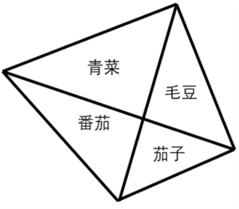
答案：D
解析：如图所示，过点B向AC作垂线交AC于点E，则BE是和的高。根据高相同，面积之比等于底边之比，故。同理，和高相等，，即青菜与毛豆的面积比例和番茄与茄子的面积比例相等。根据题意，青菜面积比毛豆多40%，则番茄面积比茄子多40%，又因番茄面积比茄子多40平方米，则茄子种植面积为100平方米，番茄种植面积为140平方米，青菜种植面积为140+140=280平方米，毛豆种植面积为平方米，题干所求为200-100=100平方米。
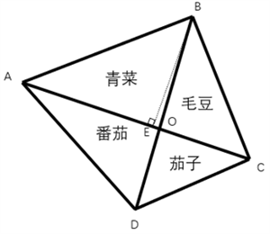
27. 某街道计划在本周的周一至周日中选取3天开展社区活动。如果要求每次活动之间至少间隔1天，则可行的活动时间安排有（ ）种。
答案：C
解析：根据题意，要求每次活动之间至少间隔1天，即活动不能相邻，故可用插空法。先排非活动日，再在非活动日的间隙中插入活动日。一周7天，选3天活动，则非活动日有7-3=4天，4天形成5个间隙，需从中任选3个，每个间隙插入1个活动日，则情况数为种。
28. 甲、乙、丙、丁四人参加知识竞赛，得分均为正整数，得分从高到低依次是甲、乙、丙、丁。如果甲和乙的总得分为100分，乙和丙的总得分为96分，丙和丁的总得分为80分，则丁的得分为：
答案：A
解析：方法一：根据题意，设甲的得分为x分，则乙的得分为100-x分，丙的得分为96-（100-x）=x-4分，丁的得分为80-（x-4）=84-x分。根据“得分从高到低依次是甲、乙、丙、丁”，可知甲的得分高于乙，即x>100-x，解得x>50；乙的得分高于丙，即100-x>x-4，解得x<52，因每人得分均为正整数，则x=51。故丁的得分为84-51=33分。
方法二：直接计算较复杂，考虑代入排除法。代入A项：丁的得分为33分，则丙的得分为80-33=47分，乙的得分为96-47=49分，甲的得分为100-49=51分，得分从高到低依次是甲（51分）、乙（49分）、丙（47分）、丁（33分），满足题干所有条件，当选。
29. 有4批原材料存放在同一个仓库，工厂每次会从仓库中运出一整批原材料进行加工，加工完成后才能从仓库提取下一批原材料。已知一批原材料在仓库内每存放满1小时需要支付100元的费用，且工厂加工这4批原材料需要的时间分别为4、6、7、8小时，则工厂为这些原材料支付的仓库存放费用至少为（ ）元。
答案：B
解析：加工原材料的时间是固定的，要使费用最少，则原材料存放在仓库的时间要最短，则让加工时间最短的原材料最先加工。
最先加工时间为4小时的原材料，则剩下3批原材料等待时间为4×3=12小时；
第二批加工时间为6小时的原材料，则剩下2批原材料等待时间为2×6=12小时；
第三批加工时间为7小时的原材料，则剩下1批原材料等待时间为7小时；
最后加工时间为8小时的原材料，则等待总时间=12+12+7=31小时，每小时支付费用为100元，则工厂为这些原材料支付的仓库存放费用至少为31×100=3100元。
30. 甲、乙两人在小区内晨跑，速度分别是140米/分钟和100米/分钟。他们同时从小区跑道的起点向终点匀速跑步，各自不停地在起点和终点往返。如果该跑道的长度为200米，则当甲第二次追上乙时，距离起点（ ）米。
答案：A
解析：根据两人同时同地同向出发，第n次追及的路程差为，可得：，解得：。则当甲第二次追上乙时，共跑了140×20=2800米，为个全程，即7个来回，此时甲又回到起点处，距离起点0米。
判断推理
图形推理
31. 下列选项中最符合所给图形规律的是（ ）。
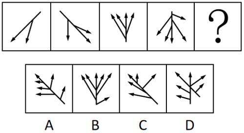
答案：A
解析：元素组成基本相同，优先考虑位置规律。观察发现，图一逆时针旋转，并增加一个箭头得到图二；图二逆时针旋转，并增加一个箭头得到图三；图三逆时针旋转，并增加一个箭头得到图四；故“？”处图形由图四逆时针旋转，并增加一个箭头得到，只有A项符合。
32. 下列选项中最符合所给图形规律的是（ ）。
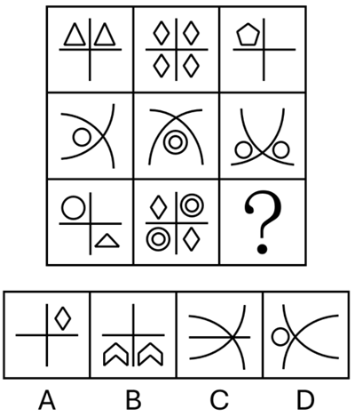
答案：C
解析：元素组成不同，优先考虑属性规律。观察发现，题干出现全直线、全曲线图形，考虑曲直性。九宫格优先看横行，第一行图形均为全直线图形，第二行图形均为全曲线图形，第三行前两幅图形均为有曲有直图形，故“？”处图形应是有曲有直图形，只有C项符合。
33. 下列4个所给图形不经过旋转或翻转，可以拼接构成（ ）。
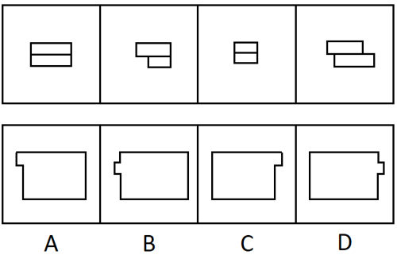
答案：A
解析：本题考查平面拼合，可采用平行且等长相消的方式解题。4个所给图形不经过旋转或翻转，可以拼接构成A项，如下图所示：
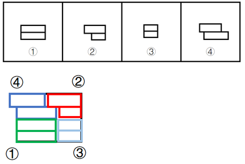
34. 下列选项中最符合所给图形规律的是（ ）。
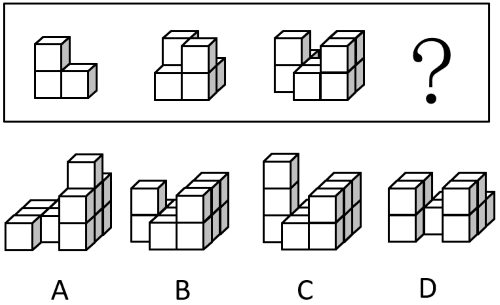
答案：B
解析：本题考查立体拼合。题干立体图形分别是由1个、2个、3个图1的“L”型小方块拼合而成，故？处应由4个图1的“L”型小方块拼合而成，只有B项符合。具体拼合方式如下图所示：
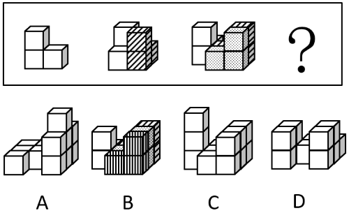
35. 下列选项中，可以由给定平面图折叠而成的是（ ）。
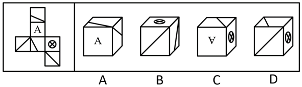
答案：D
解析：将题干展开图标上序号，如下图所示，逐一进行分析。
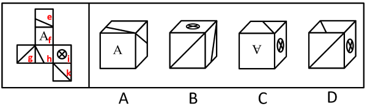
A项：选项由面e、面f和面h构成，题干展开图中，面e和面h为相对面，二者不能同时出现，选项与题干展开图不一致，排除；
B项：选项一定有面i，面i和面g为相对面，所以正面为面k。以面i和面k公共边中引出斜线的点为起点，对面k进行顺时针画边，如下图所示，题干展开图中，边1挨着面i，选项中，边1没有挨着面i，选项与题干展开图不一致，排除；
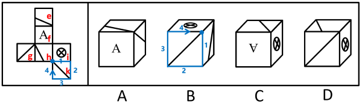
C项：选项一定有面f和面i，若顶面为面e，则题干展开图中，三者的公共点挨着面f的字母“A”的尖，选项中，三者的公共点远离面f的字母“A”的尖；若顶面为面h，则选项中，三者的公共点引出了面h中的斜线，题干展开图中，三者的公共点没有引出面h中的斜线，选项与题干展开图不一致，排除；
D项：选项由面h、面i和面k构成，选项与题干展开图一致，当选。
判断推理
逻辑判断
36. 如果一座城市采用集约高效的发展方式，那么其资源消耗量必然会减少。只要这种减少速度非常缓慢，就不会对城市经济发展造成负面影响。
由此可以推出：
答案：A
解析：第一步：翻译题干。
①采用集约高效的发展方式 资源消耗量减少；
资源消耗量减少；
②减少速度缓慢 对经济发展造成负面影响。
对经济发展造成负面影响。
第二步：逐一分析选项。
A项：该项翻译为“ 资源消耗量减少采用集约高效的发展方式”，是对①的否后，否后必否前，可以推出，当选；
资源消耗量减少采用集约高效的发展方式”，是对①的否后，否后必否前，可以推出，当选；
B项：该项翻译为“采用集约高效的发展方式资源消耗量减少”，是对①的否前，否前得不到确定性的结论，不能推出，排除；
C项：该项翻译为“资源消耗量减少采用集约高效的发展方式”，是对①的肯后，肯后得不到确定性的结论，不能推出，排除；
D项：该项翻译为“减少速度缓慢对经济发展造成负面影响”，是对②的否前，否前得不到确定性的结论，不能推出，排除。
37. 甘蔗是生产加工食糖的重要原料。近年来，世界范围内甘蔗种植面积不断扩大，在一定程度上改变了土地利用的格局。由于全球食糖需求不断增长，有人因此认为，随着食糖的生产加工规模进一步扩大，甘蔗种植会进一步改变土地利用的格局。
要使上述推论成立，需要补充的前提是（ ）。
答案：C
解析：第一步：找出论点和论据。
论点：由于全球食糖需求不断增长，随着食糖的生产加工规模进一步扩大，甘蔗种植会进一步改变土地利用的格局。
论据：近年来，世界范围内甘蔗种植面积不断扩大，在一定程度上改变了土地利用的格局。
本题论点讨论的是“食糖需求”和“改变土地利用格局”之间的关系，论据讨论的是“甘蔗种植面积”和“改变土地利用格局”之间的关系，二者话题不一致，且提问方式为“前提”，加强优先搭桥，即建立“食糖需求”和“甘蔗种植面积”之间的联系。
第二步：逐一分析选项。
A项：该项指出甘蔗种植会给当地水资源造成压力，而论点说的是甘蔗种植会改变土地利用格局，话题不一致，无法加强，排除；
B项：该项指出甘蔗的种植周期短，能够为食糖的生产快速提供原料，而论点说的是甘蔗种植会改变土地利用格局，话题不一致，无法加强，排除；
C项：该项指出随着食糖需求增长，种植者会扩大甘蔗种植面积，建立了“食糖需求”和“甘蔗种植面积”之间的联系，搭桥项，可以加强，当选；
D项：该项指出适宜种甘蔗的土地也适合种植其他富含糖分的作物，而论点说的是甘蔗种植会改变土地利用格局，话题不一致，无法加强，排除。
38. 某种水毛茛是A市特有的野生植物，对水质要求极高，其仅生长于清澈、流动的水体中，因此被誉为优良水质的“指示物种”。2023年受特大暴雨影响，A市某自然保护区内的水毛茛大面积消失，其所依赖的自然条件难以自行恢复，因而面临灭绝的风险。但在今年春季，有人发现，该自然保护区内重新出现了这种水毛茛，且群落规模远超以往。
下列选项如果为真，最能解释上述现象的是（ ）。
答案：D
解析：第一步：找出题干矛盾。
水毛茛对水质要求极高，2023年受特大暴雨影响，A市某自然保护区内的水毛茛大面积消失，其所依赖的自然条件难以自行恢复，因而面临灭绝的风险。但在今年春季，有人发现，该自然保护区内重新出现了这种水毛茛，且群落规模远超以往。
第二步：逐一分析选项。
A项：选项指出水毛茛的分布范围已扩展至与自然保护区相邻的多处水域，而题干讨论的是本该灭绝的水毛茛为何又重新出现在了该自然保护区内，无法解释题干矛盾，排除；
B项：选项指出该自然保护区的水质优于周边河流水域，即使该自然保护区的水质比周边好，但如果未达到水毛茛生存的最低要求，水毛茛仍然无法存活，无法解释题干矛盾，排除；
C项：选项指出水毛茛繁殖能力较强，但如果未改善水质，再强的繁殖能力也无法让已濒临灭绝的水毛茛重新出现，无法解释题干矛盾，排除；
D项：选项指出近两年，通过水系修复等人工措施，该自然保护区的水质大幅提高，而水质大幅提高不仅能让水毛茛重现，还能为其提供更优越的生长环境，使得群落规模远超以往，可以解释题干矛盾，当选。
39. 某单位计划组织职工参观科技馆、文化馆、博物馆和美术馆。但由于时间有限，这4个场馆不能都去。有职工提出了如下建议并被采纳：
（1）由于相距较远，不建议既去文化馆又去博物馆；
（2）美术馆和文化馆的展览都很有吸引力，至少参观其中的一个；
（3）去年已经去过美术馆，今年就不去了。
补充下列选项中的（ ），可以得出“该单位一定会去科技馆”的结论。
答案：A
解析：第一步：翻译题干。
（1）文化馆 或 博物馆；
（2）美术馆 或 文化馆；
（3）不去美术馆。
第二步：根据题干条件进行推理。
题干条件（3）不去美术馆，是对条件（2）或关系其中一项的否定，根据否一推一，得出去文化馆；去文化馆是对条件（1）或关系其中一项的否定，根据否一推一，得出不去博物馆。
提问为“得出‘该单位一定会去科技馆’的结论”，本题给出了结论，需要补充条件，代入选项分析。
A项：翻译为：科技馆博物馆，根据题干信息不去博物馆，是对选项的否后，否后必否前，能够推出一定去科技馆，可以推出，当选；
B项：翻译为：博物馆科技馆，根据题干信息不去博物馆，是对选项的否前，否前无必然结论，无法推出，排除；
C项：翻译为：科技馆博物馆，根据题干信息不去博物馆，是对选项的肯后，肯后无必然结论，无法推出，排除；
D项：翻译为：博物馆科技馆，根据题干信息不去博物馆，是对选项的否前，否前无必然结论，无法推出，排除。
40. 太空环境具有高真空、高辐射、微重力、极端温度变化等特点，对人造卫星的材料和电子元件提出了极高的要求。近日，我国成功发射了太空计算卫星。由于太空计算卫星具备强大的数据实时处理能力，有专家据此认为，未来太空计算卫星将广泛应用于应急安全、城市治理等领域。
下列选项最有可能是上述推论暗含前提的是（ ）。
答案：D
解析：第一步：找出论点和论据。
论点：未来太空计算卫星将广泛应用于应急安全、城市治理等领域。
论据：太空计算卫星具备强大的数据实时处理能力。
本题论点讨论的是未来太空计算卫星将广泛应用于应急安全、城市治理等领域，论据讨论的是太空计算卫星具备强大的数据实时处理能力，二者话题不一致，加强优先考虑搭桥，即在“应急安全、城市治理等领域”和“强大的数据实时处理能力”之间建立联系。
第二步：逐一分析选项。
A项：选项指出太空计算卫星能够同时适应地面环境和太空环境，但题干没有涉及该卫星是否需要适应地面环境（比如可以在太空接收地面数据并传输结果），无关选项，不能加强，排除；
B项：选项指出太空计算卫星在太空中的数据处理速度显著快于地面，这和它能否应用于应急安全、城市治理等领域无关，无关选项，不能加强，排除；
C项：选项指出我国目前亟需采集应急安全、城市治理等领域的实时数据，但不清楚太空卫星是否可以胜任此工作，无关选项，不能加强，排除；
D项：选项指出应急安全、城市治理等领域存在大量需要实时处理的数据，建立了“应急安全、城市治理等领域”和“强大的数据实时处理能力”之间的联系，为搭桥项，可以加强，当选。
41. 针对某款即将上市的新产品，商家开展了预售活动，预订的人数远超预期。但在产品正式发货前，许多顾客却取消了该产品的预订。
下列选项如果为真，最不能解释上述现象的是（ ）。
答案：B
解析：第一步：找出题干矛盾。
某款新产品预售时预订人数远超预期，但在产品正式发货前，许多顾客却取消了该产品的预订。
第二步：逐一分析选项。
A项：选项指出该产品因产能问题发货日期一再延后，发货延迟会导致顾客耐心耗尽，可能在发货前取消预订，可以解释题干矛盾，排除；
B项：选项指出收到货后许多顾客反映该产品质量欠佳，但题干明确顾客取消预订的时间是“正式发货前”，顾客取消了该产品的预订，不能解释题干矛盾，当选；
C项：选项指出预售未结束时商家对新预订用户给予更大优惠，早期预订用户可能会因未享受同等优惠而感觉吃亏，进而导致发货前取消预订，可以解释题干矛盾，排除；
D项：选项指出预售期间其他商家推出设计接近且价格更低的竞品，可能导致客户在发货前取消原预订，转而选择其他商家的竞品，可以解释题干矛盾，排除。
本题为选非题，
42. 不建立主体明确、要求清晰的责任体系，就不能压紧压实安全生产责任。当前主体明确、要求清晰的责任体系已经建立，因此安全生产责任已经压紧压实。
下列选项与题干逻辑结构最为相似的是（ ）。
答案：C
解析：第一步：分析题干推理形式。
题干翻译为：不建立主体明确、要求清晰的责任体系（a）不能压紧压实安全生产责任（b）。
推理为：建立了主体明确、要求清晰的责任体系（a），因此安全生产责任已经压紧压实（b），逻辑结构为“否前推否后”。
第二步：逐一分析选项。
A项：翻译为：构建和谐社区（a）实行多元共治（b）。推理为：某社区建成了和谐社区（a），因此实行了多元共治（b），逻辑结构为“肯前推肯后”，与题干逻辑关系不一致，排除；
B项：翻译为：不实现教育资源的公平分配（a）无法提高全民素质（b）。推理为：当前全民素质有待提高，即无法提高全民素质（b），因此未实现教育资源的公平分配（a），逻辑结构为“肯后推肯前”，与题干逻辑关系不一致，排除；
C项：翻译为：不深入推进生态文明建设（a）无法实现资源循环利用（b）。推理为：某地区深入推进生态文明建设（a），因此实现了资源循环利用（b），逻辑结构为“否前推否后”，与题干逻辑关系一致，当选；
D项：翻译为：合理开采资源（a）实现自然资源的可持续利用（b）。推理为：多地政府禁止过度开采，即合理开采资源（a），因此实现了自然资源的可持续利用（b），逻辑结构为“肯前推肯后”，与题干逻辑关系不一致，排除；
43. 湖泊在北极的面积占比达到四成，为动植物生存提供了不可或缺的淡水资源。近年来，全球变暖使得北极的永冻土层逐渐融化，融化的水随之流入湖泊和海洋。有人据此推测，北极现存的湖泊面积应该扩张，然而观测数据显示，大部分北极湖泊面积都有所缩减。
下列选项如果为真，最能解释上述现象的是（ ）。
答案：D
解析：第一步：找出题干矛盾。
近年来，全球变暖使得北极的永冻土层逐渐融化，融化的水随之流入湖泊和海洋。有人据此推测，北极现存的湖泊面积应该扩张，然而观测数据显示，大部分北极湖泊面积都有所缩减。
第二步：逐一分析选项。
A项：选项指出大部分处于逐渐融化状态的冰山位于海洋中，无法解释为什么大部分北极湖泊面积都有所缩减，不能解释题干矛盾，排除；
B项：选项指出近年来北极动植物数量不断增加，淡水资源的需求量不断增大，与题干讨论的北极湖泊面积大小无关，不能解释题干矛盾，排除；
C项：选项指出由于冰川消融，北极地区的部分湖泊相互连接成了一个更大的湖泊，无法解释为什么大部分北极湖泊面积都有所缩减，不能解释题干矛盾，排除；
D项：选项指出永冻土层消融使北极地区的湖泊底部出现大量孔隙，湖水从孔隙渗漏，解释了为什么大部分北极湖泊面积都有所缩减，可以解释题干矛盾，当选。
44. 对于研发型企业来说，获得突破性的研发成果至关重要。某研发型企业在回顾其发展历程后发现，企业大多数突破性的研发成果都源自新手研发人员。该企业因此认为，要想获得更多的突破性研发成果，在组建新的研发团队时应当只考虑新手研发人员。
以下选项如果为真，最能反驳这一结论的是（ ）。
答案：C
解析：第一步：找出论点和论据。
论点：要想获得更多的突破性研发成果，在组建新的研发团队时应当只考虑新手研发人员。
论据：企业大多数突破性的研发成果都源自新手研发人员。
本题论点和论据讨论的都是“突破性研发成果”和“新手研发人员”之间的关系，话题一致，优先考虑削弱论点。
第二步：逐一分析选项。
A项：选项指出该企业现有的多数重要研发成果尚未成功转化应用，讨论的是“现有的研发成果”，而论点讨论的是怎样能获得更多的“突破性研发成果”，话题不一致，无法削弱，排除；
B项：选项指出对于大多数的新手研发人员而言，该企业目前的薪资吸引力不高，讨论的是该企业对新手研发人员的吸引力，而论点讨论的是只有新手研发人员的团队能否获得更多的突破性研发成果，话题不一致，无法削弱，排除；
C项：选项指出突破性的研究设想都需要经过经验丰富的研发人员改进才能实现，说明如果组建的研发团队只有新手研发人员的话，将无法改进并实现突破性的研究设想，即只有新手研发人员无法获得更多的突破性研发成果，削弱论点，可以削弱，当选；
D项：选项指出将新手研发人员培养成经验丰富的研发人员需要投入大量的资源，讨论的是新手研发人员的培养成本，而论点讨论的是只有新手研发人员的团队能否获得更多的突破性研发成果，话题不一致，无法削弱，排除。
45. 研究团队开发了一种新型抗衰老水凝胶材料，为了验证这一材料的实际效果，研究团队开展了系列实验。结果发现，与未注入该材料的实验鼠相比，注入该材料的实验鼠肌肉组织中细胞的代谢水平显著提高，细胞端粒长度平均延长15%，且肌肉再生能力提升40%。由此可以推断，该材料能在一定程度上抗衰老。
以下选项如果为真，最不能支持这一结论的是（ ）。
答案：C
解析：第一步：找出论点和论据。
论点：该材料能在一定程度上抗衰老。
论据：与未注入该材料的实验鼠相比，注入该材料的实验鼠肌肉组织中细胞的代谢水平显著提高，细胞端粒长度平均延长15%，且肌肉再生能力提升40%。
本题论点说的是该材料能在一定程度上抗衰老，论据说的是该材料提高细胞的代谢水平，延长15%细胞端粒长度，提升40%肌肉再生能力。论点、论据话题不一致，可以考虑搭桥来加强，且本题为选非题，排除加强项即可。
第二步：逐一分析选项。
A项：细胞代谢水平与衰老程度呈负相关，说明细胞的代谢水平提高则衰老程度就会降低，在论点和论据之间建立了联系，属于搭桥项，可以加强，排除；
B项：老年动物的肌肉再生能力显著低于青壮年动物，说明肌肉再生能力高的动物比肌肉再生能力低的动物年轻，在论点和论据之间建立了联系，属于搭桥项，可以加强，排除；
C项：将该材料注入小鼠体内后，小鼠未产生明显的免疫反应，说明注入该材料不会发生明显的免疫反应，而论点讨论的是该材料是否能抗衰老，话题不一致，无法加强，当选；
D项：端粒长度延长是细胞分裂激活的伴随现象，表明细胞恢复了“年轻”，说明延长细胞端粒代表了细胞更年轻，在论点和论据之间建立了联系，属于搭桥项，可以加强，排除。
本题为选非题，
46. 绿化率高的小区，居民幸福感强。居民幸福感强的小区，环境卫生状况好。因此，绿化率高的小区环境卫生状况好。
下列选项与上述推理的逻辑结构最为相似的是（ ）。
答案：B
解析：第一步：分析题干推理形式。
翻译为：绿化率高的小区居民幸福感强，居民幸福感强环境卫生状况好，将二者串联可以得到：绿化率高的小区居民幸福感强环境卫生状况好，因此，绿化率高的小区环境卫生状况好，逻辑结构为“肯前推肯后”。
第二步：逐一分析选项。
A项：翻译为粉尘浓度高的区域易发生爆炸，易发生爆炸应严禁烟火，将二者串联可以得到：粉尘浓度高的区域易发生爆炸应严禁烟火，因此，粉尘浓度不高的区域无需禁止烟火，逻辑结构为“否前推否后”，与题干推理形式不一致，排除；
B项：翻译为员工满意度较高的公司离职率较低，绩效考核合理的公司员工满意度较高，将二者串联可以得到：绩效考核合理的公司员工满意度较高离职率较低，因此，绩效考核合理的公司离职率较低，逻辑结构为“肯前推肯后”，与题干推理形式一致，当选；
C项：翻译为企业通过技术创新可以提高生产效率，生产效率的提高可以促进利润增长，将二者串联可以得到：企业通过技术创新可以提高生产效率可以促进利润增长，因此，利润增长快的企业进行了技术创新，逻辑结构为“肯后推肯前”，与题干推理形式不一致，排除；
D项：翻译为双减政策的落实减轻了学生的学习压力，课外活动时间的增加减轻了学生的学习压力，因此，课外活动时间的增加体现了双减政策的落实，逻辑结构不是“肯前推肯后”，与题干推理形式不一致，排除。
47. 某市召开年度经济工作会议，根据安排，某一排是教育局、住建局、交通局、农业局、人社局、财政局6个职能局的座位。已知：
①财政局在人社局的右手边并与之相邻，在住建局的左手边但与之不相邻；
②教育局与交通局之间隔着一个职能局。
如果农业局和财政局相邻，则下列选项必然正确的是（ ）。
答案：B
解析：第一步：分析题干条件。
（1）财政局在人社局的右手边并与之相邻，在住建局的左手边但与之不相邻；
（2）教育局与交通局之间隔着一个职能局；
（3）农业局和财政局相邻。
第二步：根据题干条件进行推理。
题干条件（1）和（3）均提到“财政局”，可优先从“财政局”入手进行推理。
根据条件（1）和（3）可知，财政局两侧分别为人社局和农业局，且按照从左到右的顺序依次为人社局、财政局、农业局；结合条件（2）教育局与交通局之间隔着一个职能局可知，中间的只能是住建局，故教育局、交通局、住建局按照从左到右的顺序依次为教育局、住建局、交通局或者交通局、住建局、教育局。又根据条件（1），财政局在住建局的左手边，可推出各职能局的座位顺序如下图所示：
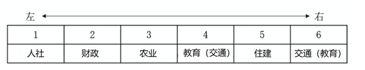
住建局在从右到左第二位，B项当选。
48. 某次“特色示范村”评选活动设立了文化旅游、非遗传承、生态农业、数字农业示范村4个奖项，甲、乙、丙、丁4个村庄各获其中之一。已知：
①文化旅游示范村的经济收入高于丙村；
②甲村和数字农业示范村的经济收入相当，且都不是最高的；
③生态农业示范村的经济收入比丁村高；
④丙村的经济收入高于非遗传承示范村。
根据上述条件，下列选项必然正确的是（ ）。
答案：B
解析：第一步：分析题干条件。
（1）文化旅游＞丙；
（2）甲数字农业，且都不是最高的；
（3）生态农业＞丁；
（4）丙＞非遗传承。
第二步：根据题干条件进行推理。
题干条件中“丙”提及次数最多，可优先从此处入手推理。
根据条件（1）和（4）可知，文化旅游＞丙＞非遗传承，结合条件（2）可知，甲和丙的经济收入关系有3种可能性，①甲＞丙，②甲丙，③丙＞甲，对此可进行假设：
假设①甲＞丙：
根据条件（2）可知，甲数字农业＞丙，结合已推出的“文化旅游＞丙＞非遗传承”，可知甲数字农业＞丙＞非遗传承，此时甲和数字农业的经济收入为4个村中最高的，与条件（2）矛盾，该假设不成立；
假设②甲丙：
根据条件（2）可知，丙是数字农业，结合已推出的“文化旅游＞丙＞非遗传承”可知，甲是生态农业，结合条件（3）可知，丁是非遗传承，剩下的乙是文化旅游，如下图所示：
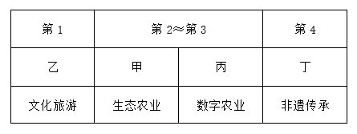
假设③丙＞甲：
根据条件（2）和已推出的“文化旅游＞丙＞非遗传承”，可知甲是非遗传承，结合条件（3）可知，丙是生态农业，丁是数字农业，剩下的乙是文化旅游，如下图所示：
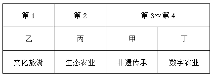
综上，只有B项必然正确。
49. 某古生物学研究小组在一处白垩纪晚期地层中发现了保存完整的恐龙皮肤化石。通过高分辨率显微镜，研究人员发现该恐龙皮肤表面存在大量微小的中空管状结构。由于这些结构类似于现代鸟类羽毛中用于体温调节的羽茎，研究人员推测，这些微小的中空管状结构是恐龙用于调节体温的特殊结构。
以下选项如果为真，最能支持上述推测的是（ ）。
答案：D
解析：第一步：找出论点和论据。
论点：这些微小的中空管状结构是恐龙用于调节体温的特殊结构。
论据：通过高分辨率显微镜，研究人员发现该恐龙皮肤表面存在大量微小的中空管状结构。由于这些结构类似于现代鸟类羽毛中用于体温调节的羽茎。
本题的论点和论据均在讨论中空管状结构与体温调节的关系，二者话题一致，加强优先考虑补充论据。
第二步：逐一分析选项。
A项：该项指出中空管状结构具有增强生物体表的散热能力，解释了“微小的中空管状结构是恐龙用于调节体温”的原因，保留；
B项：该项指出其他恐龙具有类似的中空管状结构，没有说明该结构能否调节体温，且论点说的是该结构是恐龙用于调节体温的特殊结构，话题不一致，无法加强，排除；
C项：该项指出现代爬行类动物的皮肤表面不存在类似的中空管状结构，而论点说的是该结构是恐龙用于调节体温的特殊结构，话题不一致，无法加强，排除；
D项：该项指出由于白垩纪晚期气候异常，恐龙需要体温调节机制维持生存，若恐龙不需要体温调节，则中空管状结构就不是恐龙用于调节体温的，为论点成立的必要条件，可以加强，保留；
对比AD项，D项的必要条件力度强于A项的解释原因，择优选择D项。
注：本题是争议题。选A和D都有一定道理。
选A的角度：结构类似推功能类似，答案应该“建立结构和功能的必然关系”；
选D的角度：论点是A是恐龙用于B的。“恐龙需要B”就是必要条件。
本题和2024年联考一道真题选项结构的设置一模一样（如下题所示），而24年的真题问法更加严谨，问法为“要得到上述结论，需要补充的前提是”，因此优选是必要条件的选项，而本题结构和框架和24年题目基本一致，因此小粉笔优选D项。
【所属试卷】2024年重庆市公务员录用考试《行测》题（网友回忆版）第103题
土楼是客家文化的象征，主要集中在福建。其实，在广东潮汕地区也存在大量土楼，仅潮州饶平县就有781座。潮汕的土楼始建于元代，盛于明清，迄今已有700余年的营造史。专家认为，土楼生于乱世，是应潮客先民们聚族而居，集体防卫的需要而产生的。
要得到上述结论，需要补充的前提是：
A.在古老的土楼守护下，家族得以躲过漫长岁月中的种种侵袭和战乱
B.潮汕历史上有过漫长的山海动荡，从明至清屡遭山贼、海盗的侵扰
【答案】B
50. 企业节能减排必须通过购买碳配额或自主开发减排项目实现。某企业未购买碳配额，因此该企业要节能减排需自主开发减排项目。
下列选项与题干逻辑结构最为相似的是（ ）。
答案：D
解析：第一步：分析题干推理形式。
题干翻译为：企业节能减排通过购买碳配额 或 自主开发减排项目实现（即12 或 3），某企业未购买碳配额（即2），因此该企业要节能减排需自主开发减排项目（即要想1必须3），故逻辑结构为：12 或 3，当2时，要想1必须3。
第二步：逐一分析选项。
A项：选项翻译为：申请绿色产品认证的公司通过专家评审 或 提交检测报告（即12 或 3），某公司未提交过检测报告（即3），因此该公司应当组织开展专家评审（即2），逻辑结构为：12 或 3，32，与题干推理形式不一致，排除；
B项：选项翻译为：有的地区支持企业购买碳汇，有的地区则支持企业使用清洁能源（即有的1，有的2），某地区支持企业使用清洁能源（即2），因此该地区不支持企业购买碳汇（即1），逻辑结构为：有的1、有的2，21，与题干推理形式不一致，排除；
C项：选项翻译为：企业申请创业补贴通过线上申请 或者 通过线下窗口办理（即12 或 3），某企业已经通过线上渠道提交了申请（即2），因此无需前往线下窗口办理（即3），逻辑结构为：12 或 3，23，与题干推理形式不一致，排除；
D项：选项翻译为：重点排放单位核查排放情况委托第三方 或 通过安装监测设备（即12 或 3），某企业属重点排放单位未委托第三方核查排放情况（即2），因此该企业需安装监测设备核查排放情况（即要想1必须3），故逻辑结构为：12 或 3，当2时，要想1必须3，与题干推理形式一致，当选。
（题干逻辑结构为要实现某个目标，必须采用两种方式之一，已知未采取一种方式，因此必须要采取另一种方式，D项中两种方式的换位是为了将逻辑结构更加清晰的呈现出来。）
资料分析
广东既是经济大省，也是人口大省、就业大省，数据显示，2024年广东净增74万人，新出生113.3万人；城镇新增就业超143万人，超额完成国家下达的110万人的年度就业任务，并且实现4386万异地务工人员稳定就业，是名副其实的就业超级“蓄水池”。
今年以来，广东按照省委、省政府关于实施“百万英才汇南粤”行动计划的部署安排，围绕“粤聚英才、粤见未来”主题，广泛募集岗位、强化精准对接、提升优质服务、持续扩大声势。截至7月中旬，全省已吸纳超过100万应届高校毕业生留粤来粤就业创业，进一步夯实广东现代化产业体系的人才基座，充分彰显经济大省挑大梁的责任担当。
“百万英才汇南粤”行动计划紧紧围绕广东现代化产业体系建设需要，聚焦20个战略性产业集群，突出新兴产业未来产业，充分发动知名科技企业拿出大量优质岗位，组织发动各类企事业单位动态募集120多万优质岗位，以具有竞争力的薪酬和岗位吸纳优秀高校毕业生，今年3至7月，累计组织2.1万家重点企业在“粤就业”小程序发布62.5万个岗位。其中，面向博士、硕士的8.6万个，面向本科生25.6万个，面向大专和各类技工学校学生28.3万个，年薪10万元以上岗位约26万个，年薪20万元以上岗位超6.5万个，年薪50万元以上甚至百万年薪的岗位超5000个。
从留粤就业的省内应届高校毕业生情况看，今年1至7月，制造业吸纳毕业生约10万人，人数占比从2020年的14.72%提升到2025年的19.21%。其中，人工智能、机器人、半导体与集成电路、高端装备制造、新能源汽车、低空经济相关专业毕业生占四分之一，对发展新质生产力、建设现代化产业体系的人才支撑作用明显提升。
51. “百万英才汇南粤”行动计划围绕的主题是（ ）。
答案：B
解析：定位文字材料第二段可得：今年以来，广东按照省委、省政府关于实施“百万英才汇南粤”行动计划的部署安排，围绕“粤聚英才、粤见未来”主题，对应B项。
52. 关于“百万英才汇南粤”行动计划，资料未提及（ ）。
答案：C
解析：定位资料第三段可知，“百万英才汇南粤”行动计划紧紧围绕广东现代化产业体系建设需要，对应A项；聚焦20个战略性产业集群，突出新兴产业未来产业，对应B项；充分发动知名科技企业拿出大量优质岗位，组织发动各类企事业单位动态募集120多万优质岗位，对应D项。定位资料第二段，按照省委、省政府关于实施“百万英才汇南粤”行动计划的部署安排，截至7月中旬，全省已吸纳超过100万应届高校毕业生留粤来粤就业创业，未提及鼓励应届毕业生跨省就业创业情况。
本题为选非题，
53. 2025年3至7月“粤就业”小程序发布的62.5万个岗位中，年薪10万元以上岗位占比（ ）。
答案：D
解析：根据题干“2025年3至7月······占比······”，结合材料时间为2025年3至7月，可判定本题为现期比重问题。定位文字材料第三段可得：2025年3至7月，累计组织2.1万家重点企业在“粤就业”小程序发布62.5万个岗位，其中，年薪10万元以上岗位约26万个。根据公式：比重 ，可得题干所求比重约为，在D项范围内。
，可得题干所求比重约为，在D项范围内。
54. 2025年1至7月，留粤就业的人工智能、机器人、半导体与集成电路、高端装备制造、新能源汽车、低空经济相关专业省内应届高校毕业生约有（ ）万人。
答案：A
解析：根据题干“2025年1至7月······省内应届高校毕业生约有······万人”，结合材料时间为2025年1至7月及材料给出题干相关专业省内应届高校毕业生占比，可判定本题为现期比重问题。定位文字材料第四段可得：从留粤就业的省内应届高校毕业生情况看，今年（2025年）1至7月，制造业吸纳毕业生约10万人······其中，人工智能、机器人、半导体与集成电路、高端装备制造、新能源汽车、低空经济相关专业毕业生占四分之一。根据公式：部分=整体×比重，则所求万。
55. 根据资料，以下说法可以判断属实的是（ ）。
答案：A
解析：A项：定位文字材料第一段可得：数据显示，2024年广东新出生113.3万人，正确；
B项：材料中并未提及2024年广东省内应届高校毕业生和本科生相关信息，故无法判断，错误；
C项：定位文字材料第一段可得：2024年广东城镇新增就业超143万人，超额完成国家下达的110万人的年度就业任务，非2025年上半年，错误；
D项：定位文字材料第二段可得：截至（2025年）7月中旬，全省已吸纳超过100万应届高校毕业生留粤来粤就业创业，非2025年上半年，错误。
标准物质与尺子、砝码一样，是测量中必不可少的参照工具。它是已提前获得准确测量结果、均匀稳定的样品，待测样品以其为标准，确保不同时间、人员、实验室的测量结果可比。标准物质研制生产机构在开展具体品种标准物质的生产供应前，须通过技术审评并取得定级证书，这些取得定级证书的标准物质，统称为“国家标准物质”。根据计量溯源性、准确度和用途等，国家标准物质目前分为两类，即一级标准物质和二级标准物质。
国家标准物质数量快速增长的原因有四个方面：一是用途广泛、涉及经济、社会发展的各个领域；二是需求大幅增加，检测部门和行业主管部门日益重视测量结果的准确性；三是产业发展迅速，除了中国计量科学研究院等机构之外，越来越多的企业积极申报国家标准物质；四是政策支持，国家市场监管总局出台了一系列措施，比如将国家标准物质纳入国务院计量发展规划、发布建设和管理指导意见，并优化审评制度，提高审批效率。
截至2025年上半年，市场监管总局累计批准建立国家标准物质18982项。2025年上半年，我国新批准建立国家标准物质524项，同比增长78.8%，涉及研制单位51家。从研制单位类型看，企业申报标准物质379项，同比增长86.7%；科研事业单位申报145项，同比增长61.1%。从地域分布看，华北地区新建标准物质234项，华东地区新建标准物质124项，东北地区新建标准物质62项，西北地区新建标准物质48项，华南地区新建标准物质32项，西南地区新建标准物质24项，华中地区未新建标准物质。
56. 根据计量溯源性、准确度和用途等，国家标准物质目前分为（ ）类。
答案：A
解析：定位文字材料第一段可知，根据计量溯源性、准确度和用途等，国家标准物质目前分为两类，即一级标准物质和二级标准物质。
57. 根据资料，国家标准物质数量快速增长的原因不包括（ ）。
答案：C
解析：定位文字材料第二段可得：国家标准物质数量快速增长的原因有四个方面：一是用途广泛······二是需求大幅增加······三是产业发展迅速······四是政策支持······。则国家标准物质数量快速增长的原因不包括产业链完整。
本题为选非题，
58. 截至2024年末，市场监管总局累计批准建立国家标准物质（ ）项。
答案：B
解析：定位文字材料第三段可得：截至2025年上半年，市场监管总局累计批准建立国家标准物质18982项。2025年上半年，我国新批准建立国家标准物质524项。根据2024年末累计批准数据+2025年上半年新批准数据=2025年上半年累计批准数据，则题干所求为18982-524=18458项。
59. 2024年上半年，我国新批准建立的国家标准物质中，企业申报的标准物质项目数约占（ ）。
答案：D
解析：根据题干“2024年上半年······约占”，结合材料时间为2025年上半年，可判定本题为基期比重问题。定位文字材料第三段可得：2025年上半年我国新批准建立国家标准物质524项（B），同比增长78.8%（b）；企业申报标准物质379项（A），同比增长86.7%（a）。根据公式：基期比重，则所求比重为，与D项最接近。
60. 下列选项中，最有可能准确反映2025年上半年我国新建标准物质地域分布情况的是（ ）。
答案：A
解析：定位文字材料第三段可得：2025年上半年，我国新批准建立国家标准物质524项。从地域分布看，华北地区新建标准物质234项，华东地区新建标准物质124项，东北地区新建标准物质62项，西北地区新建标准物质48项，华南地区新建标准物质32项，西南地区新建标准物质24项，华中地区未新建标准物质。饼形图未给出图例时，应按材料数据顺序（从前往后或从上往下），从12点钟方向开始顺时针排布。
因华中地区未新建标准物质，可知饼状图只包括6个地区，排除C、D两项。对比A、B两项，最明显的区别为华南地区和西南地区的大小关系（即最后两部分），华南地区32项明显大于西南地区24项，排除B项。
截至2024年末，广东省共有体育场地35.3万个，较上年增长3.58%；体育场地面积3.72亿平方米，较上年增长4.49%；人均体育场地面积2.91平方米（按常住人口计算），较上年增长3.93%。
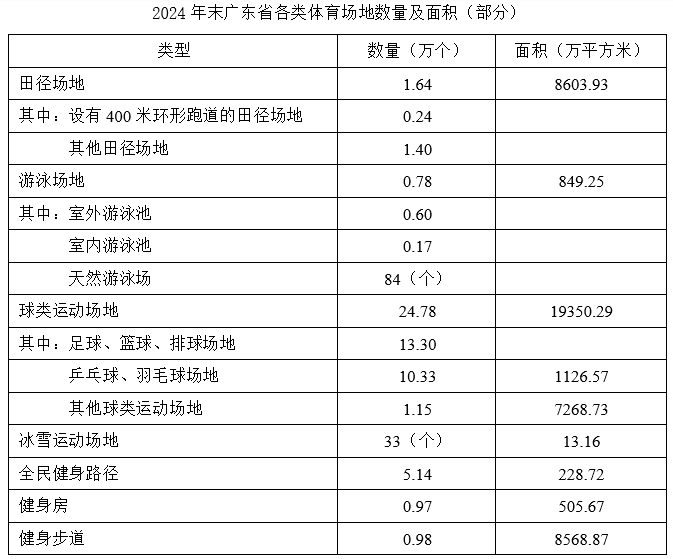
61. 2024年，广东省体育场地数量增加约（ ）万个。
答案：B
解析：根据题干“2024年······增加约······万个”，可判定本题为增长量计算问题。定位文字材料可得：截至2024年末，广东省共有体育场地35.3万个，较上年增长3.58%。根据公式：增长量，则所求万个，与B项最接近。
62. 2024年末，广东省田径场地中，设有400米环形跑道的田径场地数量占比（ ）。
答案：A
解析：根据题干“2024年末，······数量占比”，可判定本题为现期比重问题。定位表格材料可得：2024年末广东省田径场地总数量为1.64万个，设有400米环形跑道的田径场地数量为0.24万个。根据比重，可知广东省田径场地中，设有400米环形跑道的田径场地数量占比，在A项范围内。
63. 2024年末，广东省足球、篮球、排球“三大球”场地面积约为（ ）亿平方米。
答案：D
解析：定位表格材料可知“球类运动场地=足球、篮球、排球场地+乒乓球、羽毛球场地+其他球类运动场地”，且已知球类运动场地面积为19350.29万平方米；乒乓球、羽毛球场地面积为1126.57万平方米；其他球类运动场地面积为7268.73万平方米，则足球、篮球、排球场地面积亿平方米。
64. 2024年末，广东省下列运动场地单位面积排序正确的是：
答案：D
解析：根据题干“2024年末······单位面积排序正确的是”，结合材料时间为2024年末，可判定本题为现期平均数问题。定位统计表可得：2024年末，广东省田径场地的数量为1.64万个，面积为8603.93万平方米；游泳场地的数量为0.78万个，面积为849.25万平方米；冰雪运动场地的数量为33个，面积为13.16万平方米；健身房的数量为0.97万个，面积为505.67万平方米。根据单位面积，则2024年末广东省下列运动场地单位面积分别为：
田径场地，平方米/个；
游泳场地，平方米/个；
冰雪运动场地，平方米/个；
健身房，平方米/个。
综上，运动场地单位面积排序正确的是田径场地>冰雪运动场地>游泳场地>健身房。
65. 根据材料，以下说法不正确的是（ ）。
答案：C
解析：A项：定位文字材料可得：截至2024年末，广东省体育场地面积3.72亿平方米，较上年增长4.49%。根据公式：基期量 ，故所求为亿平方米，正确；
，故所求为亿平方米，正确；
B项：定位文字材料可得：截至2024年末，广东省体育场地面积3.72亿平方米，较上年增长4.49%；人均体育场地面积2.91平方米（按常住人口计算），较上年增长3.93%。根据公式：个数，即人数，故所求为亿人，正确；
C项：定位统计表可得：2024年末，广东省游泳场地数量为0.78万个，其中，天然游泳场为84个。根据公式：比重，故所求为，即占比超过1%，错误；
D项：定位文字材料和统计表可得：截至2024年末，广东省体育场地面积3.72亿平方米；球类运动场地面积为19350.29万平方米。根据公式：比重，故所求为，正确。
本题为选非题，
新中国成立以来，我国的城镇化建设不断推进，城市规模不断扩大，综合实力显著增强，基础设施持续改善，城市更加宜业宜居。
从城市数量看，1948年末，我国城市共有58个，新中国成立后，大批县城改设为城市。1949年末，全国城市共有129个，其中，地级以上城市68个，县级市61个，建制镇2000个左右。改革开放前，我国的城镇化经历了一段比较曲折的发展历程，小城市和小城镇发展缓慢。1978年末，全国城市共有193个，其中，地级以上城市101个，县级市92个，建制镇2173个。改革开放以来，城市数量快速增加。2023年末，城市个数达到694个，其中，地级以上城市297个，县级市397个，建制镇21421个。
从城市人口规模看，1949年末，城市人口共3949万人，百万人口以上城市仅5个，九成的城市人口在50万以下。改革开放后，城市人口规模不断扩大，人口集聚效应更加明显。2023年末，我国地级以上城市常住人口达到67313万人，常住人口超过500万的城市有29个，超过1000万的城市有11个。
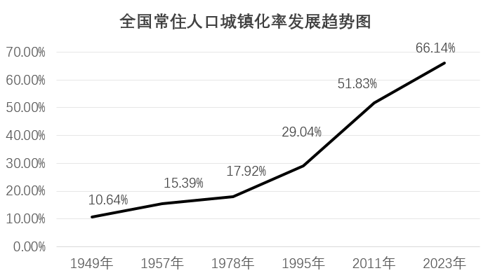
66. 根据材料，下列时间段我国常住人口城镇化率增加最多的是：
答案：C
解析：定位图形材料可知：1957年、1978年、1995年、2011年、2023年全国常住人口城镇化率分别为：15.39%、17.92%、29.04%、51.83%和66.14%。1957—1978年我国常住人口城镇化率增加17.92%-15.39%=2.53%；1978—1995年我国常住人口城镇化率增加29.04%-17.92%=11.12%；1995—2011年我国常住人口城镇化率增加51.83%-29.04%=22.79%；2011—2023年我国常住人口城镇化率增加66.14%-51.83%=14.31%。比较可知，我国常住人口城镇化率增加最多的是1995—2011年。
67. 2023年末，我国地级以上城市的常住人口规模平均约为（ ）。
答案：B
解析：根据题干“2023年末······常住人口规模平均约为······”，结合材料给出了2023年末的数据，可判定本题为现期平均数问题。定位文字材料二、三段可得：2023年末地级以上城市297个、我国地级以上城市常住人口67313万人。根据公式：平均数，则2023年每个地级以上城市的平均常住人口规模万人，与B项最接近。
68. 与1949年末相比，2023年末我国城市中，地级以上城市数量占比（ ）。
答案：A
解析：根据题干“与1949年末相比，2023年末······占比”，结合选项为增加了/减少了+百分点，可判定本题为两期比重问题。定位文字材料第二段可得：1949年末，全国城市共有129个，其中，地级以上城市68个；2023年末，城市个数达到694个，其中，地级以上城市297个。根据比重，可得2023年末我国城市中，地级以上城市数量占比为，1949年末的占比为。因42%-52%=-10%，则与1949年末相比，2023年末我国城市中，地级以上城市数量占比减少了约10个百分点。
69. 与1978年末相比，2023年末我国各类型城镇数量增幅排序正确的是（ ）。
答案：D
解析：根据题干“与1978年末相比，2023年末······增幅排序正确的是”，可判定本题为一般增长率问题。定位文字材料第二段可得：1978年末，全国共有地级以上城市101个，县级市92个，建制镇2173个；2023年末，全国共有地级以上城市297个，县级市397个，建制镇21421个。根据公式，因为全都需要减1，因此比较大小只需要比较即可。地级以上城市为；县级市为；建制镇为。因此各类型城镇数量增幅排序为：建制镇>县级市>地级以上城市。
70. 根据资料，以下说法错误的是（ ）。
答案：C
解析：A项：定位文字材料第三段和统计图可得：1949年末，我国城市人口共3949万人，常住人口城镇化率为10.64%。根据总人口，则1949年末我国总人口为，所以当年非城镇常住人口为，即非城镇常住人口<4亿-3949万，不超过4亿，正确；
B项：定位文字材料第二段可得：1978年末，全国城市共有193个，县级市92个。则我国县级市的数量在全国城市中的占比为，不到一半，正确；
C项：定位文字材料第二段和第三段可得：2023年末，城市个数达到694个，常住人口超过500万的城市有29个。根据比重，则我国常住人口超过500万的城市占比为，不到5%，错误；
D项：定位文字材料第三段可得：2023年末，我国地级以上城市常住人口达到67313万人，超过1000万的城市有11个。根据部分=整体×比重，15%的地级以上城市常住人口为万人。而常住人口超过1000万的城市至少共容纳了1000万×11=11000万人，11000万人>10097万人，正确。
本题为选非题，